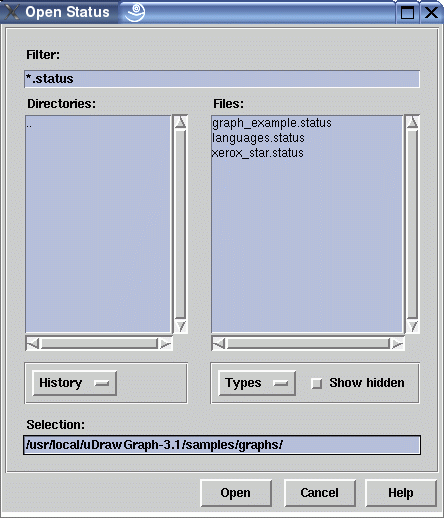

Browser to Open Files
Note: on the Microsoft® Windows® and on the Mac OS® X platform you will get the system file browser instead of the browser described on this page!
This file browser can be used to locate a graph or graph status file which shall be loaded and visualized in uDraw(Graph). Graph files are generated by the user or an application program, e.g. the graph editor. These files should have the suffix ".udg". They contain a term representation with the structure of a graph, but without layout information and node coordinates. On the other side, a status file is always saved by uDraw(Graph) itself and should have the suffix ".status". A status contains the graph, the layout information with the position of graph nodes and edges and most of the current user interface settings. The format of the status file is not documented, because it is changed with each version of uDraw(Graph), but old status files can always be loaded in an automatic backward compatibility mode.
The file browser has two views, one for the directories and one for the files in the current directory. The current directory is the one shown in the "Selection" field. To navigate through the directories, double-click on the elements in the directory view. By clicking on "..", you move back to the parent directory. To choose a file, either select it in the file view and press the "Open" button or simply double-click it. The browser beeps when you try to access a file or directory for which you do not have permissions, or when the specified file does not exist.
Dialog Elements of the File Browser
-
Filter
Shows the filter expression currently applied to the file view. The filter can be selected either with the "Types" option button or by manually typing wildcards or regular (shell) expressions here. -
Directories
A list to show the directories inside the current directory (which is displayed in the "Selection" field). Double-click on the list elements to navigate through the directories. ".." moves to the parent directory. -
Files
A list to show the files inside the current directory (which is displayed in the "Selection" field). Select one of the list elements and press the "Open" button to load a particular uDraw(Graph) graph or status file. You can accelerate this by double-clicking a file. -
History
Used to go back to a previously visited directory or to the home directory of the user. -
Types
Used to reduce the number of elements in the Files view. You can choose to see all files (default), only the graph files or only the status files. -
Show hidden
Select this check button to see hidden files and directories. -
Selection
This text entry field shows the current selection which is modified when you browse through the directories. The browser usually suggests an appropriate initial selection. You can also edit the "Selection" field by hand: if the entered selection is a directory, the browser will move to that directory, otherwise the specified file is opened immediately. -
Open
Push button to load the file specified in the "Selection" field. The file must exist to proceed with the load operation, otherwise the browser beeps. -
Cancel
Push button to close the file browser without performing any action. -
Help
Push button to start the online help system with this page.